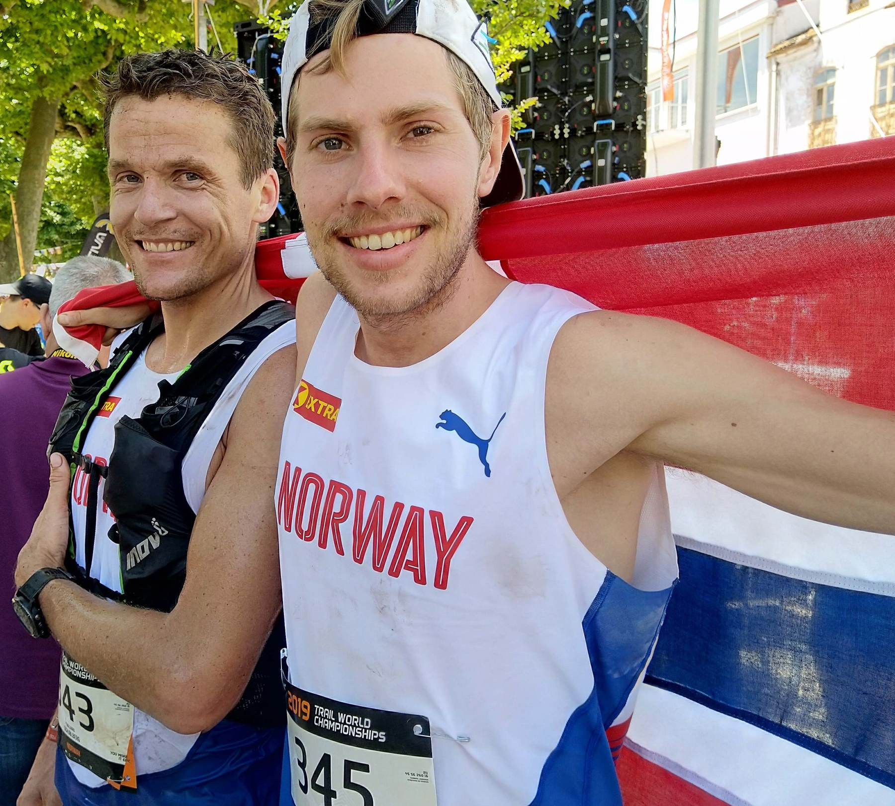

Intro
Heisann, mitt navn er Hans Kristian. For noen år siden var jeg en ganske aktiv fjelløper og satset hardt på å bli best mulig. I 2023 la jeg satsingen på hylla, men herjer fortsatt like mye i fjellet, bare litt mindre strukturert og ikke alltid med løpesko på beina. Nå livnærer jeg meg på å hausse opp andres prestasjoner gjennom podcasten Føkk Asfalt, podcasten Bergtatt og filmen The Romsdal Method.


Race- og prosjekt-historikk
| Dato | Hva | Distanse | Kategori |
|---|


Podcasten Føkk Asfalt
Ifølge Runner's World er Føkk Asfalt den beste podcasten å ha på øret mens man løper. Med ultra-lange episoder passer den perfekt til å ha med seg på langtur. Jeg gjør intervjuer med folk som har sære interesser eller som har gjort dypdykk i enkelttemaer. Det er som regel løperelatert, men ikke alltid.
Hør Føkk Asfalt her. Episodene ligger også på Spotify og Apple Podcasts.
Podcasten Bergtatt
Bergtatt handler om bratt friluftsliv: alpinklatring, randonee, splitboard, BASE og annet som foregår i terreng med høye konsekvenser.
Dokumentarfilmen The Romsdal Method
Jeg brukte store deler av 2024 og 2025 på å filme og produsere filmen The Romsdal Method, en dokumentar om treningsmetoden til fjelløperne i Romsdal, og forsøket deres på å lykkes i det 100 miles lange terrengultraløpet Western States i 2024.
If you crave friendship, mountains, and the satisfaction of honest hard work, Hans Kristian's film is essential. It may not be slick, but it has a genuine soul.
Smedsrød's film, and the athletes within it, remind viewers of the very essence of their sport.
Les mer om filmen her. Den kan leies eller kjøpes her, og du kan se traileren her.